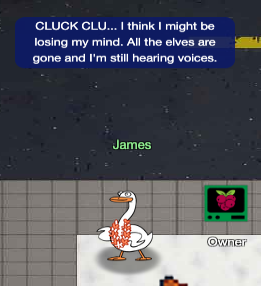

Owner

Goose James needs our help to secure the Neighborhood's Azure infrastructure by hunting down a hidden permanent Owner access that violates security best practices.
Challenge Overview
We begin with a read-only Azure CLI session provided by the Neighborhood HOA to audit their cloud environment. Although they claim all elevated access is protected by Privileged Identity Management (PIM), we must verify that no users have permanent Owner privileges assigned directly to them.
Background Info: Azure, Azure CLI, RBAC, PIM
- Azure: Microsoft's cloud computing platform providing a wide range of services, including the "Neighborhood" tenant we are investigating.
- Azure CLI: The command-line interface used to manage Azure resources. It allows for powerful querying and automation without using the web portal.
- RBAC (Role-Based Access Control): A system that provides fine-grained access management of resources. It dictates WHO (the principal) has access to what (the scope) and how (the role definition).
- PIM (Privileged Identity Management): An Azure service that manages, controls, and monitors access to important resources. It is used to provide "just-in-time" access rather than permanent access, reducing the risk of compromised high-privilege accounts.
Solution Steps
Step 1 - Initial Reconnaissance
🎄 Welcome to the Owner Challenge! 🎄
You're connected to a read-only Azure CLI session in "The Neighborhood" tenant.
Your mission: Investigate the permissions and identify WHO has access they shouldn't.
Connecting you now... ❄️
Let's learn some more Azure CLI, the --query parameter with JMESPath syntax!
$ az account list --query "[].name"
Here, [] loops through each item, .name grabs the name field
We start by listing the accounts in the tenant to understand the landscape. Using the
--query
parameter with JMESPath syntax allows us to filter the JSON output for readability.
JMESPath (pronounced "James path" [like our goose friend James]) is a query language for JSON. It allows you to search, extract, and transform specific elements from a JSON document. It's like SQL for JSON. Just as you use SQL to get specific rows and columns from a database table, you use JMESPath to get specific fields and values from a complex JSON object.
neighbor@d9fdc8301841:~$ az account list --query "[].name"
[
"theneighborhood-sub",
"theneighborhood-sub-2",
"theneighborhood-sub-3",
"theneighborhood-sub-4"
]
Step 2 - Retrieving Subscription IDs
You can do some more advanced queries using conditional filtering with custom output.
$ az account list --query "[?state=='Enabled'].{Name:name, ID:id}"
Cool! 😎 [?condition] filters what you want, {custom:fields} makes clean output ✨
To audit specific subscriptions, we need their unique IDs. We can refine our query to list only enabled subscriptions and project just the Name and ID.
neighbor@da0dccac78b8:~$ az account list --query "[?state=='Enabled'].{Name:name, ID:id}"
[
{
"ID": "2b0942f3-9bca-484b-a508-abdae2db5e64",
"Name": "theneighborhood-sub"
},
{
"ID": "4d9dbf2a-90b4-4d40-a97f-dc51f3c3d46e",
"Name": "theneighborhood-sub-2"
},
{
"ID": "065cc24a-077e-40b9-b666-2f4dd9f3a617",
"Name": "theneighborhood-sub-3"
},
{
"ID": "681c0111-ca84-47b2-808d-d8be2325b380",
"Name": "theneighborhood-sub-4"
}
]
Step 3 - Inspecting Owner Assignments
Let's take a look at the Owner's of the first listed subscription 🔍. Pass in the first subscription id.
Try: az role assignment list --scope "/subscriptions/{ID of first Subscription}" --query [?roleDefinition=='Owner']
The goal is to find "Owner" role assignments. We start by checking the first subscription to
establish a baseline of what "good" looks like. The output shows a single group assignment:
PIM-Owners. Since the challenge states PIM is being used correctly in some places,
this looks
compliant.
neighbor@da0dccac78b8:~$ az role assignment list --scope "/subscriptions/2b0942f3-9bca-484b-a508-abdae2db5e64" --query [?roleDefinition=='Owner'] [ { ... "principalId": "2b5c7aed-2728-4e63-b657-98f759cc0936", "principalName": "PIM-Owners", "principalType": "Group", "roleDefinitionName": "Owner", ... } ]
Step 4 - Confirming Suspicious Assignments
Ok 🤔 — there is a group present for the Owners permission; however, we've been assured this is a 🔐 PIM enabled group.
Currently, no PIM activations are present. 🚨
Let's run the previous command against the other subscriptions to see what we come up with.
When we run the same check against the third subscription, we see something different. It has two assignments: PIM-Owners (Compliant) and IT Admins (Suspicious).
The IT Admins group (Principal ID: 6b982f2f-78a0-44a8-b915-79240b2b4796) has been assigned the Owner role permanently, which bypasses the PIM requirement. This is a direct violation of the HOA's security policy and represents a significant risk.
neighbor@da0dccac78b8:~$ az role assignment list --scope "/subscriptions/065cc24a-077e-40b9-b666-2f4dd9f3a617" --query [?roleDefinition=='Owner'] [ { ... "principalId": "2b5c7aed-2728-4e63-b657-98f759cc0936", "principalName": "PIM-Owners", "principalType": "Group", "roleDefinitionName": "Owner", ... }, { ... "principalId": "6b982f2f-78a0-44a8-b915-79240b2b4796", "principalName": "IT Admins", "principalType": "Group", "roleDefinitionName": "Owner", ... } ]
Step 5 - Investigating Group Membership
Looks like you are on to something here! 🕵️ We were assured that only the 🔐 PIM group was present for each subscription.
🔎 Let's figure out the membership of that group.
Hint: use the az ad member list command. Pass the group id instead of the name.
Remember: | less lets you scroll through long output
We need to find who's behind this access. We query the members of the suspicious IT Admins group.
The group contains another group called Subscription Admins. This is a classic case
of nested
groups hiding permissions. We need to dig one level deeper.
neighbor@da0dccac78b8:~$ az ad member list --group 6b982f2f-78a0-44a8-b915-79240b2b4796
[
{
...
"@odata.type": "#microsoft.graph.group",
"displayName": "Subscription Admins",
...
}
]
Step 6 - Unmasking the User
Well 😤, that's annoying. Looks like we have a nested group!
Let's run the command one more time against this group.
We found him! Firewall Frank, the HOA IT Administrator, is the user with permanent Owner access through nested group assignments.
neighbor@da0dccac78b8:~$ az ad member list --group 631ebd3f-39f9-4492-a780-aef2aec8c94e
[
{
...
"displayName": "Firewall Frank",
"givenName": "Frank",
"jobTitle": "HOA IT Administrator",
"surname": "Firewall",
"userPrincipalName": "frank.firewall@theneighborhood.onmicrosoft.com"
...
}
]
🎉 Great! You discovered Firewall Frank, the👨💻 IT Administrator, with permanent Owner access.
This is a security risk ⚠️ - IT staff should use 🔐 PIM (Privileged Identity Management) for elevated access instead of permanent assignments. Permanent Owner roles create persistent attack paths and violate least-privilege principles.
Challenge Complete! To finish, type: finish
🎉 Owner Challenge complete! 🎉
neighbor@da0dccac78b8:~$
Challenge Reference Material
Challenge Descriptions
Classic Mode Description
Help Goose James near the park discover the accidentally leaked SAS token in a public JavaScript file and determine what Azure Storage resource it exposes and what permissions it grants.
CTF Mode Description
The Neighborhood HOA uses Azure for their IT infrastructure. The Neighborhood network admins use RBAC for access control. Your task is to audit their RBAC configuration to ensure they're following security best practices. They claim all elevated access uses PIM, but you need to verify there are no permanently assigned Owner roles.
Official Hints
- This terminal has built-in hints!